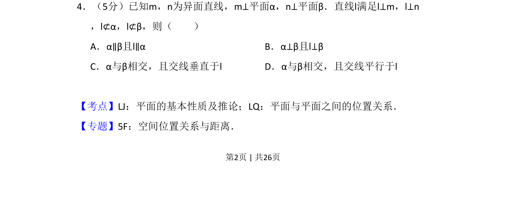
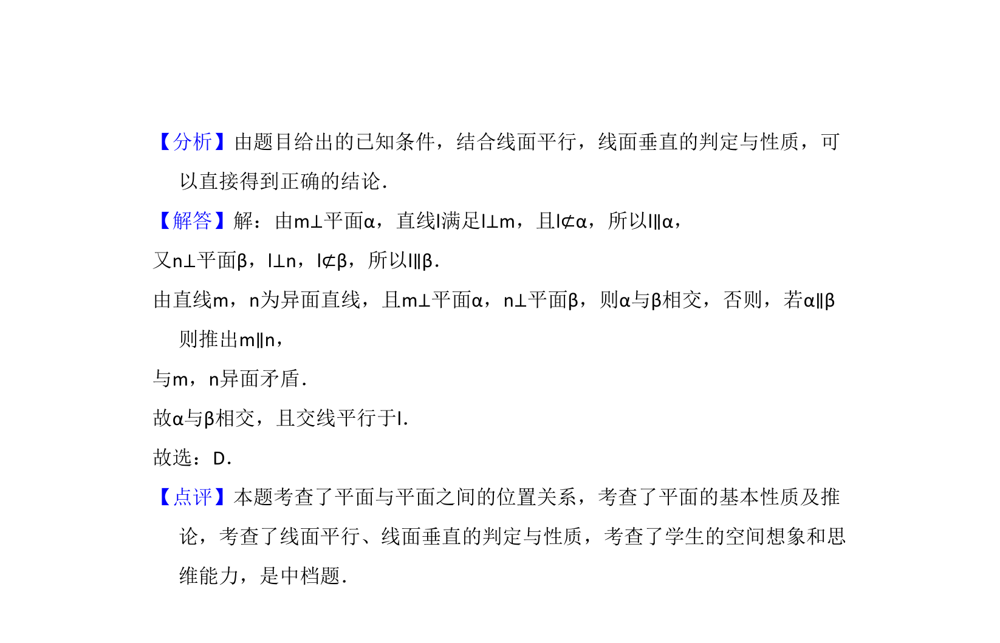

考点：异面直线 线面垂直 面面位置关系 交线性质

已知m,n为异面直线且分别垂直平面α,β，直线l同时垂直m,n且不在平面内，推断面面关系及交线与l的关系。

📄 原 PDF 第 2 页：
素材/真题/吉林/2008-2024·（吉林）数学高考真题/2013年高考数学试卷（理）（新课标Ⅱ）（解析卷）.pdf
4．（5分）已知m，n为异面直线，m⊥平面α，n⊥平面β．直线l满足l⊥m，l⊥n ，l⊄α，l⊄β，则（ ） A．α∥β且l∥αB．α⊥β且l⊥β C．α与β相交，且交线垂直于l D．α与β相交，且交线平行于l
【考点】LJ：平面的基本性质及推论；LQ：平面与平面之间的位置关系．菁优网版权所有 【专题】5F：空间位置关系与距离．